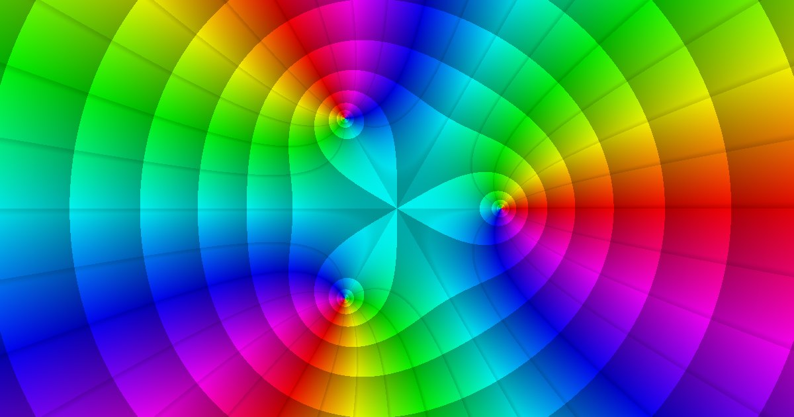

Math Explorer · Complex Functions
Complex Functions: domain colouring, the Riemann zeta function and more
Every point of the plane coloured by where a function sends it, so you can see a whole function at once.

Start exploring Complex Functions →
Complex numbers live on a plane, so a function of them turns one plane into another, which is hard to draw. Domain colouring paints each point by the angle of where it lands, round the colour wheel, with rings where the size doubles. Zeros and poles show up as points where every colour meets, turning one way or the other.
There are 29 functions to explore, from z² to the Gamma function and the Riemann zeta function, whose zeros hold a million-dollar question. You can drag zeros and poles around, type your own formulas, wrap it all onto the Riemann sphere, and repeat a function step by step to grow Julia and Newton fractals.
Things to try
- Look at the Riemann zeta function and find a zero on the critical line
- Drag the zeros and poles and watch the colours follow
- Wrap the plane onto the Riemann sphere
- Raise the Steps slider to grow a Newton fractal
- Type in your own function
Start exploring Complex Functions →